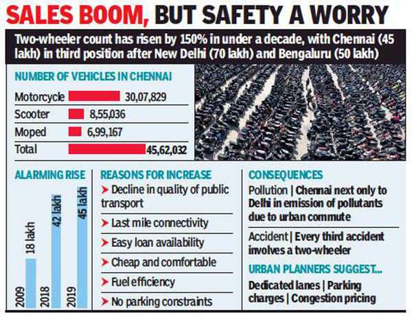
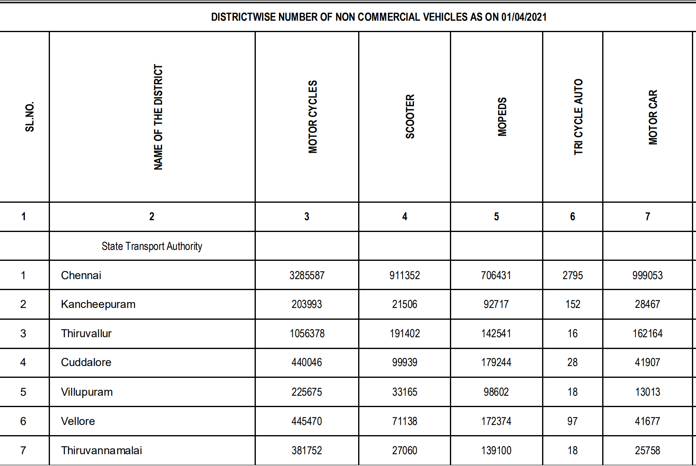

About us
Chennai is the third largest fleet of two wheelers in the country next only to New Delhi and Bangalore.
Definitely each home had one bike, some houses had more than one bike.
But all the people did not have a parking place Very few people had a parking place in their house.
Some people are parking in their company parking garage. So many people are parking their bikes on public
roads,
some people are parking in front of their house, someone is parking in front of shops etc.
These types of parking create so many problems for the public and also bike owners.
It creates street congestion , reduces road space to make traffic and also sometimes bikes have a theft
problem.
Parkin is an idea that helps to connect the two peoples,
the one who had a bike and another one who had a parking place in their home.
It helps to reduce the street congestion and also reduce bike theft.

In this statistics was released by Times of india in 2019. The count of vehicles are increasing very fast in daily life. At present each home had atleast one vehicle. Some peoples have more than one vehicles in their home. So In future definetly the vehicles rate will increase in very fast. So that time people have problems for parking and also security issues.
